Інші пташки
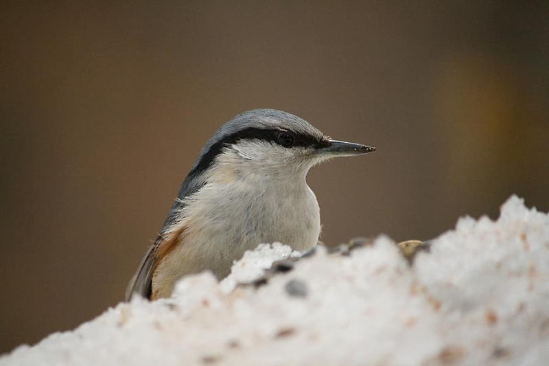Повзик
Повзик звичайний (Sitta europaea L.). Якщо ви взимку підгодовуєте птахів у лісі чи у парку - він найчастіший гість на годівниці. Може і на годівницу, встановлену на вікні чи балконі, прилітати.
- 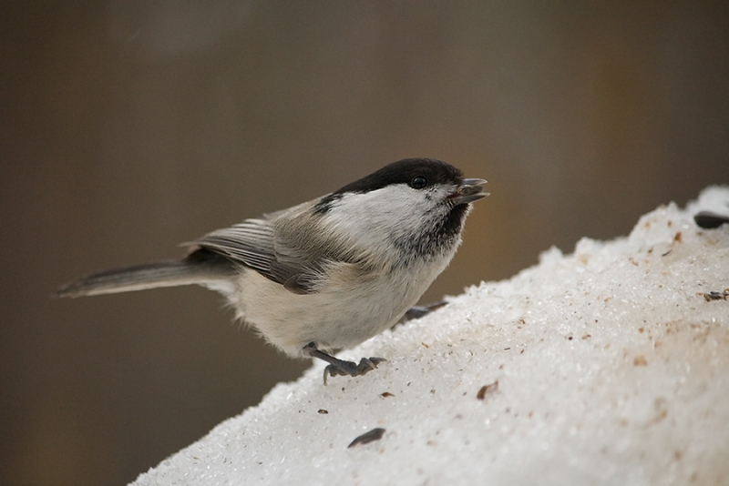
- 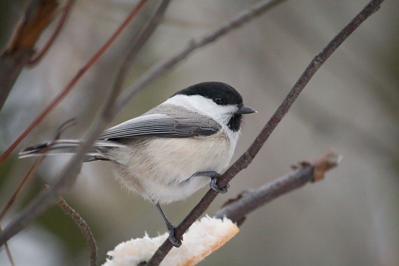
- 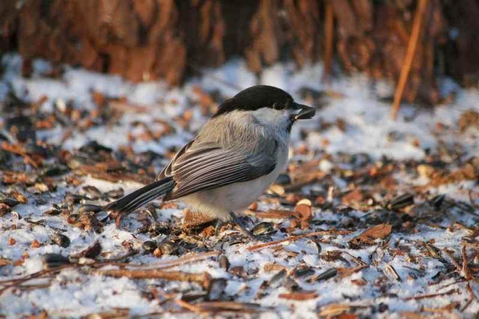
Гаїчка
Є дві практично однакових пташки: гаїчка болотяна (Poecile palustris, раніше — Parus palustris) та гаїчка-пухляк (Poecile montanus, раніше — Parus montanus). Я не зміг визначити які саме на цих фотогрфіях. Обидві прилітають на годівниці в лісах та парках взимку
- 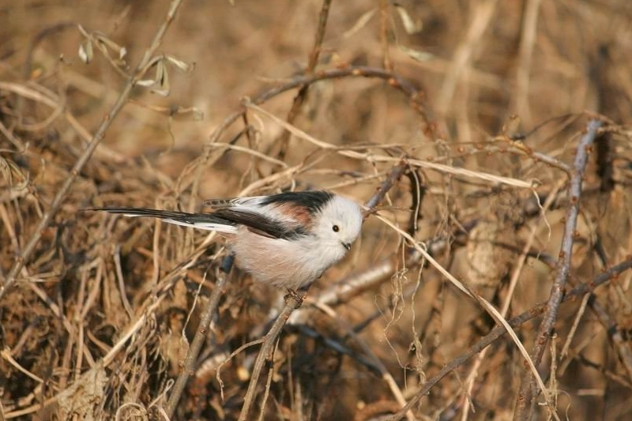
- 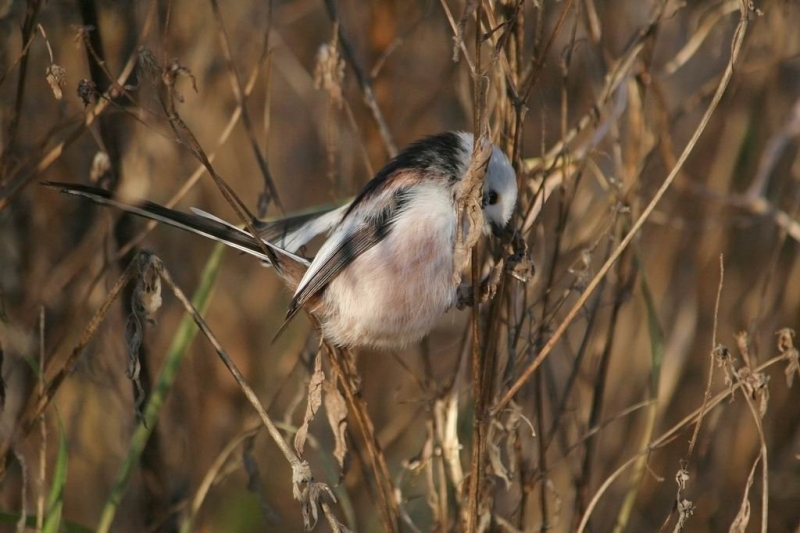
Синиця довгохвоста
Синиця довгохвоста (Aegithalos caudatus) дрібна пташка з дуже довгим хвостиком і тонесеньким співом.
Синиця вусата
Синиця вусата (Panurus biarmicus) любить рогіз та очерет. Теж співає тонесенько, не дивлячись на солідні вуса, які мають самці
- 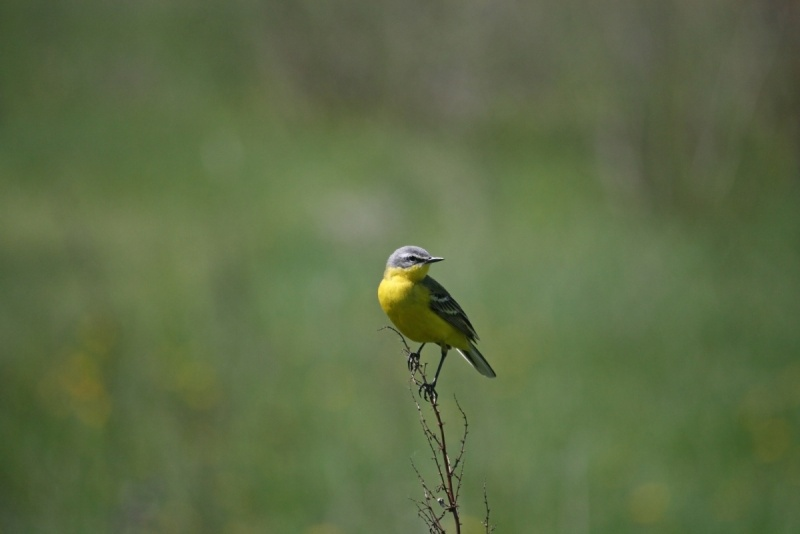
- 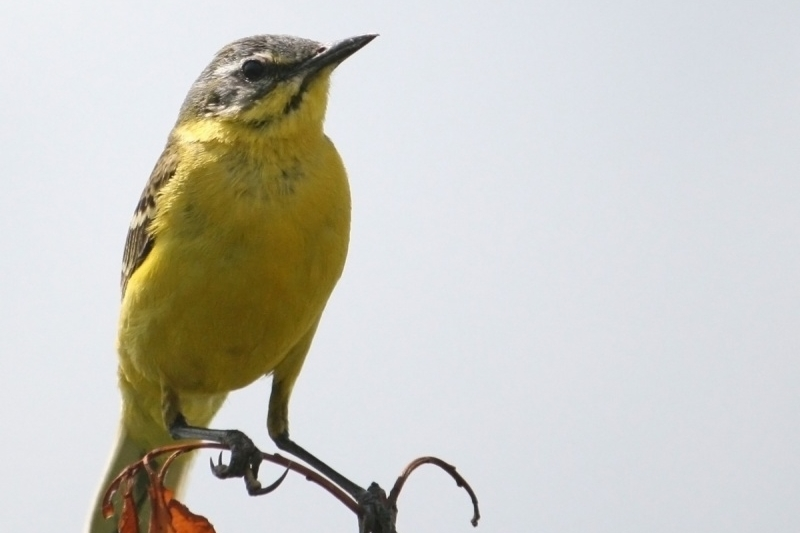
Плиска жовта
Плиска жовта (Motacilla flava) симпатична пташка. Живе у полях та луках.
- 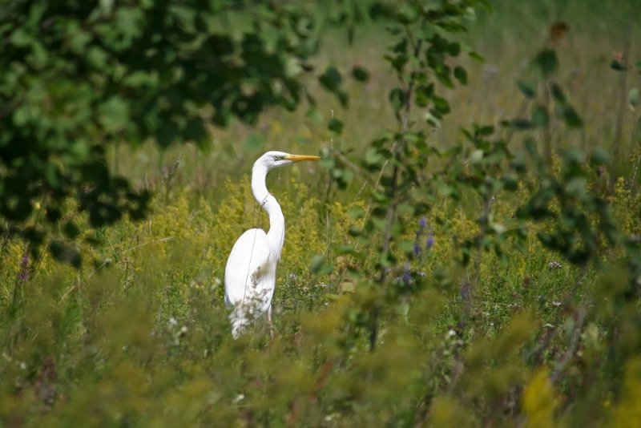
- 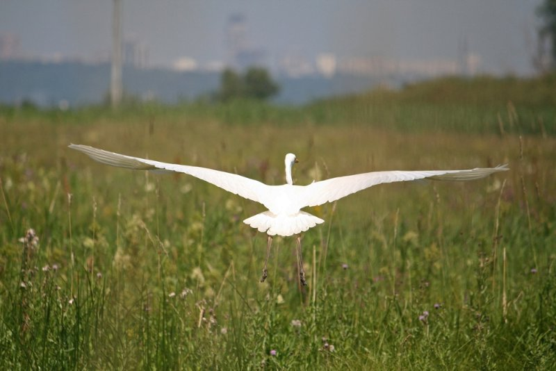
- 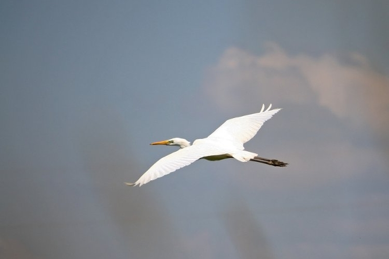
- 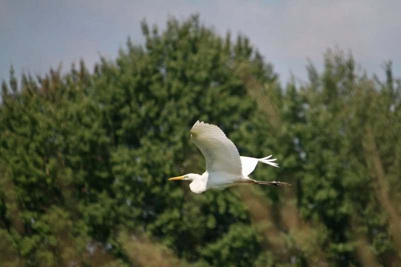
- 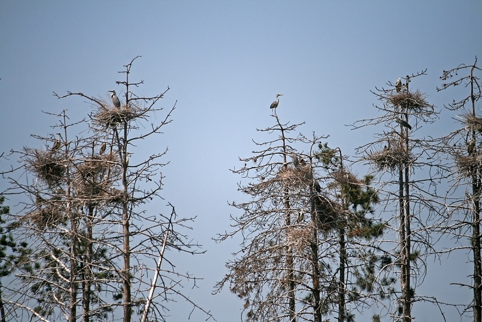
Чепура велика
Чепура велика, або чапля велика біла (Ardea alba). На останньому фото - колонія, правда, здебільшого сірої чаплі. Нажаль, через їдкий послід дерева не витримують і засихають у таких місцях.
Пелікан рожевий
Пелікан рожевий (Pelecanus onocrotalus). Цей, справді екзотичний птах гніздіться і у нас. У дельті Дунаю та ймовірно на Кінбурнському півострові. А ще він дійсно величезний - розмах крил до 2 м